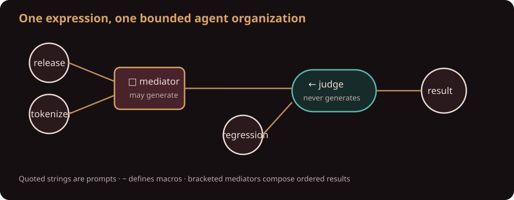
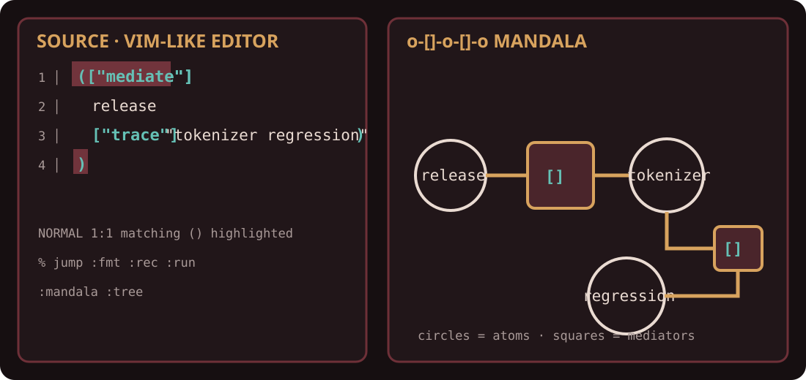

Language paper · reference contract 0.5
Rebis
An Atomic Language to Program AI
o-[]-o-[]-o
A pure S-expression prompt language with executable mediators, explicit answer flow, and an auditable organization chart for agents and subagents.
Abstract
Rebis is a minimal language for executing an S-expression as a system of
language-model agents. Quoted strings are raw prompts, bare atoms are
Lisp-like symbols, ~ defines structural macros, and
# imports definition-only modules through a host resolver. Its
compound forms are executable square mediation [M], forward
answer flow ->, and backward answer flow <-.
In ([M] A B), branches run first and their ordered actual answers
become input to mediator program M. Arrows route answers without
invoking a model themselves.
This makes orchestration visible, refusal first-class, and cost
bounded by host-controlled expansion and execution budgets. The reference Rust implementation is dependency
free. Kaos hosts live model calls, a Vim-like editor, structural bracket
highlighting, execution traces, and two projections of a program: an
expression tree and the whiteboard-derived o-[]-o-[]-o mandala.
1. Whiteboard thesis
The source design begins with a compact alphabet: two directed arrows, one executable mediator square, and structural parentheses. A second drawing turns the same program into circles joined through boxes. A third nests these graphs inside regions. Rebis keeps the durable insight and removes accidental machinery: source, agent hierarchy, and visualization are projections of one expression.
The resulting design has a sharp authority boundary. Models may scout and mediate. Arrows route actual answers between visible programs; no hidden orchestration prompt is introduced.
2. Language
program := expr EOF
expr := prompt | symbol | '\'' expr | ',' expr | '(' form ')'
form := '~' symbol '(' symbol* ')' expr
| '#' module | '[' expr ']' expr+
| op expr expr+ | symbol expr* | expr+
op := '->' | '<-'Operators occur first and chains associate left. Thus
([M] A B ...) contains one mediator and one or more branches.
Only quoted strings fire models. Bare atoms name macros and lexical
parameters. Parentheses and square brackets are structural boundaries.
| Form | Pure meaning | Agent meaning |
|---|---|---|
"prompt" | raw prompt | fires one model agent |
a | symbol | macro or parameter reference |
(~ f (x) body) | macro definition | structural expansion on (f argument) |
(# module) | lexical module import | load definition-only host-resolved hypersigil exports |
'tree / ,x | syntax template / splice | construct Rebis code without firing a model |
([M] A B) | explicit convergence | run branches, then execute mediator program M over their answers |
(<- a b) | reverse value flow | run b, supply its answers to a |
(-> a b) | forward value flow | run a, supply its answers to b |
Macros are higher-order over named symbols. If parameter worker
occurs as the head of (worker target), passing symbol
inspect substitutes the call head and produces
(inspect target). The reference contract intentionally excludes
anonymous closures, currying, and partial application.
2.1 One abstraction mechanism
A ~ definition receives unevaluated Rebis expressions and
expands to another Rebis tree. Function-like use is only the simplest
macro convention; there is no second runtime function mechanism. An
unquoted body is an implicit structural template. An explicitly quoted
body supports Lisp-style construction: comma inserts a complete caller
expression without changing characters inside prompt text.
(
(~ twice (work) '(-> ,work ,work))
(twice "Inspect and improve this code."))The call expands deterministically before the resulting agent graph runs. Macro names may also be passed in call-head position, producing higher-order graph combinators without another abstraction form.
2.2 Foundational modules
(# engineering) imports top-level macro definitions from a
validated symbolic module. The language core performs no I/O: a
ModuleResolver may map names to Kaos hypersigils, embedded
std/... modules, or a future package store. Modules may contain
only definitions and nested imports. Resolution is bounded and cached;
missing modules, invalid bodies, cycles, and storage failures are typed
diagnostics.
(
(# engineering)
(repair "Fix the cancellation lifecycle"))2.3 Loops without a recursion operator
A macro body may call its own name. For runtime termination, a two-branch
square whose mediator is a macro call is lazy: it runs the bracketed call
first, requires an exact yes or no answer, and runs
only the selected branch.
(~ loop (value step stop)
([(stop value)]
value
(loop (step value) step stop)))This derives loops from macros and the existing square rather than adding a recursion keyword. Prompt mediators and squares of other arities retain branch-first mediation. The reference orchestrator permits at most 256 macro expansions in one run.
2.4 Canonical form
The formatter preserves singleton grouping, flattens like-operator chains, preserves operand order, and breaks forms wider than sixty columns. Parsing errors carry a UTF-8 byte offset for editor diagnostics.
3. Record calculus
A Record is a sequence of raw text lines plus a co-occurrence graph. Lowercased content tokens are vertices; terms sharing a line are adjacent. Raw lines remain available for prompts and audit. Generated answers can be appended, explicitly, as additional evidence.
Evaluation returns a concept C = (T, E, s): terms T, evidence
line indexes E, and score s in [0,1].
3.1 Square
For concepts A and B, broaden both evidence sets by one graph hop. Their intersection is common ground. The score is Jaccard overlap:
square(A,B).score = |b(A) ∩ b(B)| / |b(A) ∪ b(B)|
A zero is not an exception. It states that the record does not presently connect the operands.
3.2 Arrows
(<- a b) keeps evidence for a reached by broadened
b. Its score is the surviving fraction. Evidence-free records use a
term-coverage fallback so structural reflection can still fail honestly.
eval((-> a b), R) = eval((<- b a), R)
This law is exact and tested. An arrow is attribution, not generation and not an assertion that either operand is a mathematical inverse.
4. Agent execution
A host implements a small fallible boundary:
trait Oracle {
fn try_fire(&self, prompt: &str) -> Result<Option<String>, String>;
}Every quoted prompt becomes a subagent. Bare symbols never fire a model. Macro calls substitute argument expressions structurally into their bodies without interpolating text inside quoted prompts. Macro symbols may themselves be arguments, allowing reusable agent combinators. Every square executes the mediator code written inside its brackets; there is no hidden global mediator prompt. The mediator receives labeled, ordered branch results. A square therefore becomes a mediator subagent. A non-refusal answer is appended to the record before the expression is evaluated again. Arrows make no calls themselves; they pass the actual labeled answers from one side into the other.

The returned orchestration contains the final concept, typed runtime
diagnostics, typed execution events, and a trace of
Firing { agent, prompt, answer }. An observer receives events
synchronously for live host rendering. Without recursive expansion,
syntax-tree size bounds potential model calls. With self-calling macros,
the host's expansion, firing, token, time, and spending limits provide the
operational bound.
5. Tree, editor, and mandala
The Unicode tree is the organization chart: ○ marks a prompt,
◇ a symbol, λ a definition, @ a call,
□ a mediator, and →/← arrows. With a record loaded, every node is annotated with
its score and evidence count.
The mandala is the circuit projection. It repeats the whiteboard identity
o-[]-o-[]-o. Prompts and values are o terminals,
mediators are [M: code], definitions are
~[f(parameters)] templates, and calls are [f]
squares. Macros therefore reuse the whiteboard geometry instead of
adding another primitive. Nested expressions remain nested circuits.

Kaos embeds both projections beside a direct editor with an optional
Vim-compatible mode. It provides normal,
insert, and command modes; Unicode-safe motions; dd, undo/redo,
pair insertion, diagnostics, canonical formatting, and file operations.
Structural parentheses and square brackets are inserted and highlighted as
matching pairs; % jumps between them.
/mandala " whiteboard circuit (default)
/tree " scored expression tree
/graph " focus the scrollable graph
/panel hide " hide the graph panel
/run " run through the selected Kaos model
/format " canonicalize source
:w file.rebis " Vim save
:q " Vim closePressing / enters Kaos command mode; : remains Vim
command mode. The editor implements normal, insert, character-visual, and
line-visual selection. With graph focus, motions, arrows, and page keys
scroll both axes. The mandala assigns real rows to groups, branches,
macro templates, calls, mediators, and arrow stages. The slash-command palette
filters while typing and supports arrow selection and completion. Rebis is
the default Kaos screen; /chat switches interfaces. During
/run, the right pane becomes a live firing trace and final
score. Ctrl-C cancels. The CLI exposes the same views through
kaos rebis tree and kaos rebis mandala.
6. Worked mundane-data example
Consider five lines from a pizza shop:
friday 41 margherita orders
oven broke friday night
saturday refunds spiked
saturday 12 orders were refunded after the oven failure
sunday the oven was repaired$ cat orders.txt | rebis '(["Summarize the connection"] "oven" "refunds")'
score 0.250
terms 12 after failure oven saturday
evidence 1 line(s)
$ cat orders.txt | rebis '(<- "refunds" "friday")'
score 0.000
terms refunds
evidence 0 line(s)The first query finds one connecting line but reports weak overlap. The second refuses a tempting story: Friday does not reach the direct refund line under the graph rule. These values are produced by the reference binary and pinned in a unit test.
6.1 Incident program
(["Write the incident report"]
"Inspect the release and tokenizer changes"
"Trace the regression through Unicode handling"
"Check which customers are affected")The three investigations run first. Their ordered answers are then supplied to the explicit report-writing mediator.
7. Hosting and operational contract
The core crate performs no network I/O and has zero dependencies. A host owns provider authentication, model selection, timeouts, token budgets, retries, redaction, concurrency, persistence, and user authorization.
Kaos adapts its configured Spec to Oracle. The command
cat notes.txt | kaos rebis run program.rebisuses the same Claude, OpenAI, OpenRouter, or Ollama selection as the rest of
the application. run --dry traverses the actual agent tree with
every call refusing, enabling topology and trace tests without network access.
The legacy kaos mirror command and myth gate spelling
(mirror P) remain compatibility surfaces, not additional Rebis
syntax.
Answers are untrusted text. Rebis does not execute tool calls found in them. A production host should persist the firing trace and distinguish original record lines from generated additions.
8. Claims, limits, and tests
| Property | Status | Evidence |
|---|---|---|
| Three-operator grammar and multiline parsing | implemented | parser tests |
->/<- law | implemented | equality tests across records |
| arrows never generate | implemented | oracle call-count tests |
| call count bounded by nodes | implemented | orchestration tests |
| bounded cached module graph | implemented | import, cycle, validation, and resolver tests |
| typed runtime observability | implemented | diagnostic and live-event conformance tests |
| pizza outputs | measured | CLI run and pinned unit test |
| LLM answer quality | not claimed | provider- and task-dependent |
Rebis does not establish truth from co-occurrence, guarantee that a generated bridge is correct, or remove the need for source evaluation. Its narrower claim is architectural: it makes retrieval, generation, judgment, refusal, and their costs separately visible.
9. Conclusion
Rebis treats a prompt architecture as a small program rather than an opaque
orchestration configuration. The square is where language models may speak;
the arrows are where evidence answers back. The same expression can be read
as calculus, organization chart, or mandala circuit. That correspondence is
the purpose of o-[]-o-[]-o: visible mediation between visible
endpoints, repeated without hiding authority.